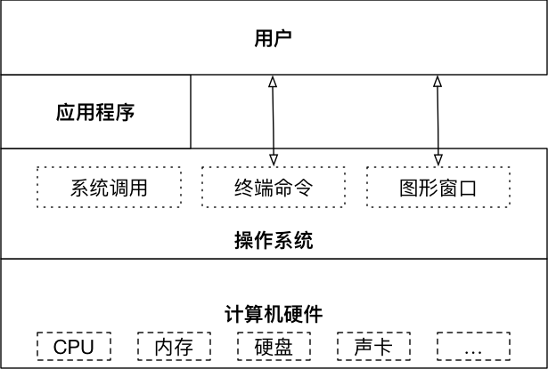
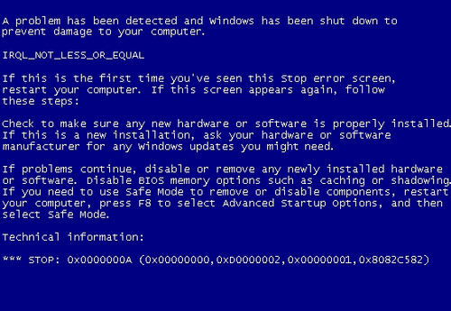

01-操作系统(科普)
操作系统（OS）¶
操作系统 （Operation System，简称OS）
- 一个例子说明操作系统

- 操作系统作为接口的示意图

什么是裸机
- 没有安装操作系统的计算机，通常被称为 裸机
- 如果想在 裸机 上运行自己所编写的程序，就必须用机器语言书写程序。
- 如果计算机上安装了操作系统，就可以在操作系统上安装支持的高级语言环境，用高级语言开发程序
操作系统的作用¶
- 是现代计算机系统中 最基本和最重要 的系统软件
- 是 配置在计算机硬件上的第一层软件，是对硬件系统的首次扩展
- 主要作用是管理好硬件设备，并为用户和应用程序提供一个简单的接口，以便于使用
- 而其他的诸如编译程序、数据库管理系统，以及大量的应用软件，都直接依赖于操作系统的支持
不同应用领域的主流OS¶
桌面操作系统¶
- Windows 系列：用户群体大
- MacOS：适合于开发人员
- Linux：应用软件较少
服务器操作系统¶
- Linux：安全、稳定、免费，占有率高
- Windows Server：付费，占有率低

嵌入式操作系统¶
- Linux
移动设备操作系统¶
- IOS
- Android（基于
Linux）
为什么不统一用Windows？

虚拟机¶
虚拟机（Virtual Machine）指通过软件模拟的具有完整硬件系统功能的、运行在一个完全隔离环境中的完整计算机系统
- 虚拟系统通过生成现有操作系统的全新虚拟镜像，具有真实操作系统完全一样的功能
- 进入虚拟系统后，所有操作都是在这个全新的独立的虚拟系统里面进行，可以独立安装运行软件，保存数据，拥有自己的独立桌面，不会对真正的系统产生任何影响
- 而且能够在现有系统与虚拟镜像之间灵活切换的一类操作系统
常用的虚拟机平台：
Oracle VM VirtualBox
VMware Workstation
Hyper-V